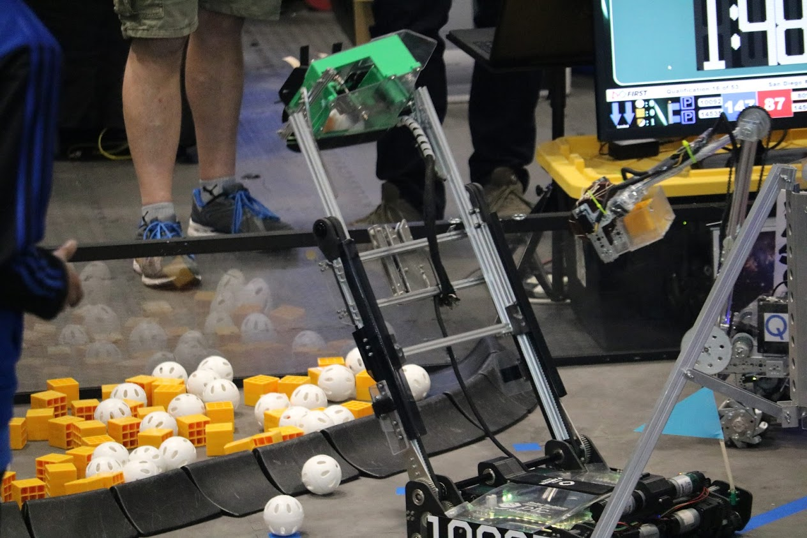

Robot Arm Science Olympiad
My partner and I had a very unique design, that used a flywheel to intake pennies onto a long sheath, on a carriage that can move along the length of that aluminum bar. The sheath would then invert to dump all of the pennies into the center of the archery target, (2x points for inverted, pennies cannot be on top of one another)
Sound of Music Science Olympiad
For this event, we had to build an instrument capable of playing a scale, and you got bonus points for volume. I essentially built a pitch adjustable airhorn, that was incredibly loud and had a trombone like straw that allowed you to change the pitch up to one octave.

Hovercraft SciOly
We built a hovercraft that floats on a high pressure region underneath it (trapped by the skirt), and is propelled by a fan. It was even able to hover above water!
Wright Stuff SciOly
This plane was able to stay in the air for over 100 seconds, using only a rubber band as power. It flew in large counterclockwise circles so we wouldn't lose it :)

An Xbox remote hacked into a Bop It
I rewired all of the existing bop it buttons to the Xbox circuit board, so I could play video games and drive our robot with it!

Go Kart project!
My friend and I built this custom Go Kart last summer. It was a lot of fun!


Me working on my solar simulator for the shaner lab, and the finished project
Here's the 2018-2019 robot I built with the Green Griffins, my FTC team
Here's a game I made in 10th grade with two friends for a creative english project. You use the arrow keys to move, and the enter key to talk to people. I made it to allow players to understand, firsthand, how easily we warp our values to be agreeable with others, and how easy it is to loose yourself in a group setting
Here's a link to another game I made. It's linked because it automatically plays sounds and I didn't want you to be bombarded with music when you opened this page :)
Here's a short song I wrote and produced in FL studio :)